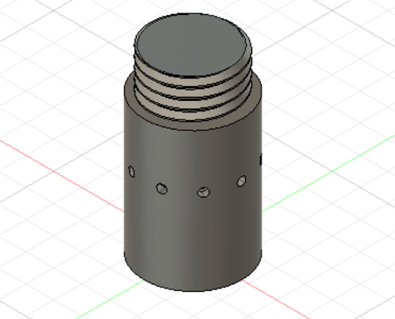

プランターを作成するにあたって鳥居案を作って見るということになった。
モチーフはシンガポールの植物園である。
自分は下の部分を作成する。


すこし穴を上に作りすぎてしまった。
仕組みとしては下にタンクを設置し水をくみ上げ真ん中の穴から水を出す仕組みにした。
ホースの取り回しなどが解決された。
配線について少しうまく考えられていない。
実際に使ってみたが、穴の位置が高すぎて、プランターの外に水があふれてしまった。